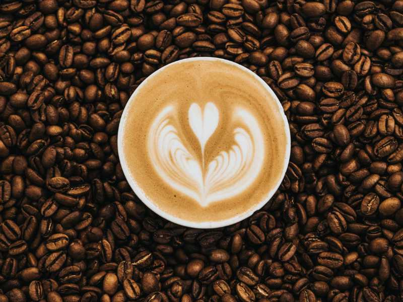

אודות you need coffee
חנות YNC הראשונה נפתחה בחודש נובמבר 2011, קרוב מאוד לסיום השיפוצים של הרכבת הקלה שברח' יפו. חנות YNC הינה מותג שבחסות חברת יוני שרה בע"מ העוסקת בקפה, תיירות ואומנות.

הינו בוטיק קפה באווירה ביתית ייחודית, אירופאית וירושלמית כאחת. נמצאת במרכז העיר ירושלים ברח' יפו 30. בשנת 2017, התרחבנו ופתחנו את YNC בית קלייה ובוטיק קפה ברח' יפו 78 ירושלים. אנו קולים את הקפה שלנו מידי יום, מה שמאפשר ללקוחותינו חווית קפה הכי טרייה ואיכותית שיש! אצלינו, ב- YNC, רשת בוטיק קפה ובית קלייה תוכלו למצוא פולי קפה קלויים ומשובחים.
קפה טחון טרי מכל זני הערביקה המשובחים:
אתיופיה סידמו, סומטרה קלוסי, ברזיל סרדו, קולומביה סופרימו, קוסטה ריקה, גואטמלה, רובוסטה אוגנדה ורובוסטה ויטנאמית.
כמו כן ניתן להשיג אצלינו קפה אורגני וקפה נטול קפאין. ברשותינו גם מגוון רחב של תערובות משובחות המותאמות במיוחד להכנת קפה אספרסו, מקינטה, פילטר ושחור – טורקי ועוד. אנו שמחים להעניק ללקוחותינו שירות מקצועי אמין ומהיר. אנו מעניקים מישלוחים חינם לקונים באתר מעל קילו קפה ו/או לגרים בירושלים. נישמח לעמוד לשרותיכם תמיד.
לרכישה